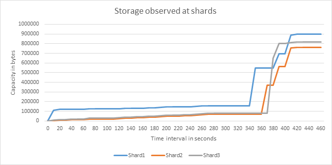

Monitor
The monitor is a diagnostic utility and is responsible for collecting the used storage at each shard after every 10 seconds.
System Components
The monitor is configured at startup using the configuration file. The description and structure os this file is presented below.
Configuration file
| Field | Description |
|---|---|
| homedir | Home directory for the shard and client. Each client and shard has a different home directory |
| metadatafile | The file that stores the metadata corresponding to the files and replicates stored by the shard |
| shard1ip | IP address of shard 1 |
| shard1port | Port of shard 1 |
| shard2ip | IP address of shard 2 |
| shard2port | Port of shard 2 |
| shard3ip | IP address of shard 3 |
| shard3port | Port of shard 3 |
API Documentation
The entire module has been developed using Python. The monitor connects to the three shards usning the configuration file. Also the monitor uses the same API calls that the client uses.
Measurements
Initially the shards are configured with different storage using the shards metadata. The monitor notes down the storage amount returned by the shards in a CSV file. The graph of the measurements is given below. 
As seen above, we see that initially shard1 has used more storage capacity than the other shards. Over a period of time, the client keeps uploading a file of 10 KB to the shards. The storage capacity is still not balanced out because backup data is being sent to shard 1. However, towards the end the client makes uploads of a few large files. It is at these points that we see the storage capacities slowly start to balance out. Thus, we can conclude that the load balancing algorithm is working as expected.